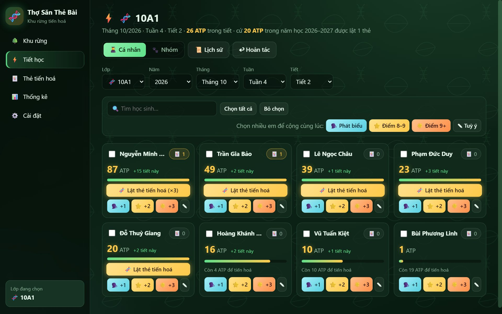
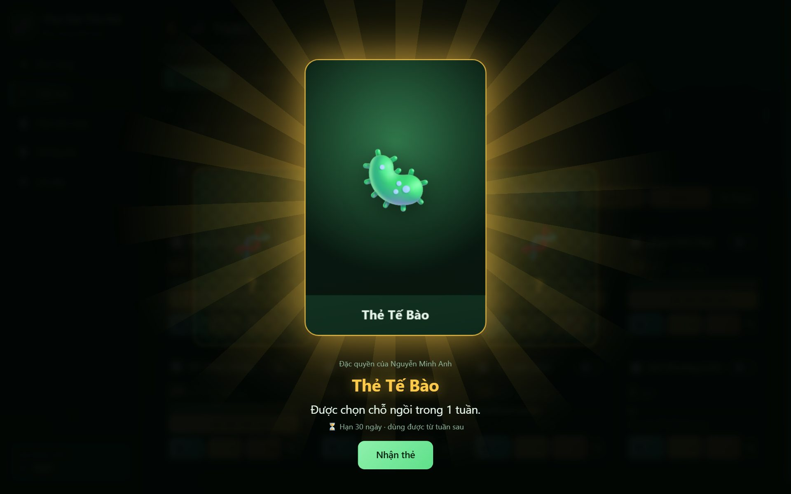
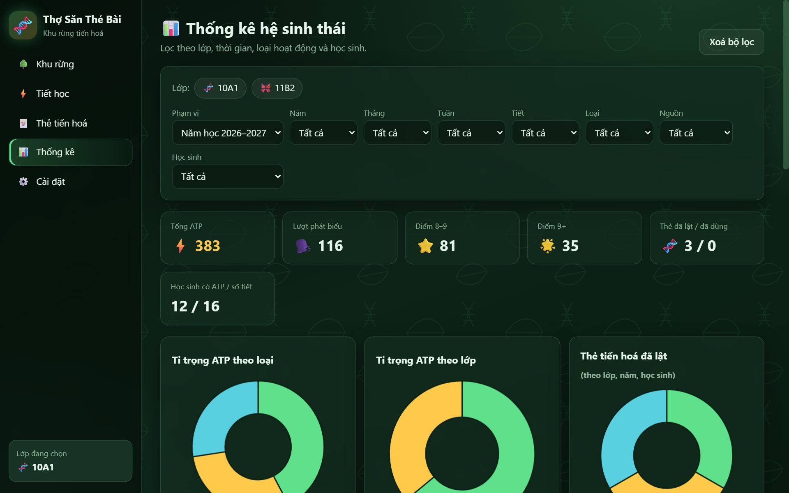

Cộng ATP bằng một lần bấm
Phát biểu, điểm 8 đến 9, điểm trên 9 hoặc một số tuỳ ý. Chọn nhiều em để cộng cùng lúc, bấm nhầm thì hoàn tác.
Quản lý lớp học theo phong cách Sinh học
Học sinh tích luỹ năng lượng ATP qua từng lần phát biểu và từng điểm cao. Đủ năng lượng, các em được lật một thẻ tiến hoá để nhận đặc quyền do chính thầy cô đặt ra.
Bấm vào một thẻ để lật thử
Thiết kế để bấm nhanh khi đang đứng lớp và trình chiếu đẹp trên màn hình lớn.
Phát biểu, điểm 8 đến 9, điểm trên 9 hoặc một số tuỳ ý. Chọn nhiều em để cộng cùng lúc, bấm nhầm thì hoàn tác.
Mỗi thẻ là một đặc quyền kèm hạn sử dụng. Thầy cô tự đặt tên, nội dung và tải ảnh riêng cho từng lá bài.
Chia ngẫu nhiên hoặc kéo thả từng em. Cộng điểm cho nhóm thì mọi thành viên đều nhận đủ ATP.
Biểu đồ tròn và biểu đồ cột theo lớp, thời gian, loại hoạt động, nhóm và học sinh, kèm bảng xếp hạng.
Chọn file, chọn cột chứa họ tên, xem trước rồi nhập. Tên trùng được bỏ qua tự động.
Lưu bằng SQLite ngay trong trình duyệt. Xuất một file để sao lưu hoặc chuyển sang máy khác.
Luật chơi đơn giản để học sinh nắm được ngay từ buổi đầu tiên.
Phát biểu và đạt điểm cao để nhận năng lượng. Điểm của nhóm cũng tính cho từng em.
Cứ đủ một mốc ATP trong năm học, học sinh có thêm một lượt lật thẻ.
Chọn một trong các thẻ đang úp. Thẻ được chọn bay vào giữa màn hình và lật mở.
Từ tuần kế tiếp, thầy cô bấm vào thẻ của em để sử dụng. Thẻ quá hạn sẽ tự biến mất.
Mỗi loại thẻ chỉ giữ một lá. Lật nhiều lần sẽ ra những đặc quyền khác nhau.
Sang năm học mới, ATP tính lại từ đầu. Ngày bắt đầu và kết thúc năm học do thầy cô đặt.
Ảnh chụp từ ứng dụng với dữ liệu minh hoạ.



Không. Chỉ cần mở file index.html bằng Chrome hoặc Edge là dùng được, kể cả khi không có mạng.
Ngay trong trình duyệt trên máy của thầy cô. Vào Cài đặt, mục Dữ liệu để xuất file sao lưu hoặc nhập lại trên máy khác.
Có. Mỗi thẻ có tên, đặc quyền, hạn sử dụng và ảnh riêng. Mốc ATP để lật thẻ và số thẻ úp mỗi lần cũng chỉnh được.
Có, miễn là các thẻ khác loại. Thẻ vừa nhận chưa dùng được trong tuần đó, và sẽ tự mất nếu để quá hạn.
Tạo lớp đầu tiên, nhập danh sách học sinh và bắt đầu săn ATP ngay trong tiết tới.
Mở Thợ Săn Thẻ Bài